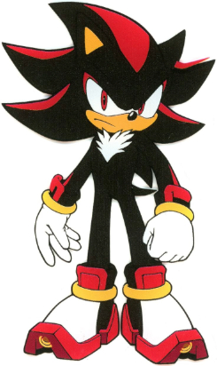

About
The Sonic the Hedgehog series features a character named Shadow the Hedgehog. A frequent and fierce foe of Sonic the Hedgehog, whom he resembles and shares many abilities with. “Ultimate Lifeform” Shadow was developed by Professor Gerald Robotnik on board the Space Colony ARK more than fifty years ago. He is the outcome of Project Shadow, a government experiment that could only be finished by giving Shadow the extraterrestrial Black Doom's DNA.
Following his birth, Shadow became friends with Maria Robotnik, Gerald's granddaughter. But the Guardian Units of Nations (G.U.N.) thought the initiative was dangerous and attacked the ARK, killing Maria and capturing Shadow and Gerald. Gerald, driven insane, changed Shadow's memories in order to get retribution in the future. Before being released by Dr. Eggman, Gerald's grandson, Shadow had been in stasis for decades. Driven by a desire for revenge, Shadow battled Sonic and his companions until his genuine recollections of Maria reappeared, motivating him to defend the planet against Gerald's apocalyptic scheme. But in the process of falling to Earth, Shadow lost his memory. Only until he had to deal with the Black Arms invasion of Earth would Shadow realize the truth of his existence. Since then, he had defended the Earth and its people as a dark hero, fighting for Maria's desire for peace.
.jpg)